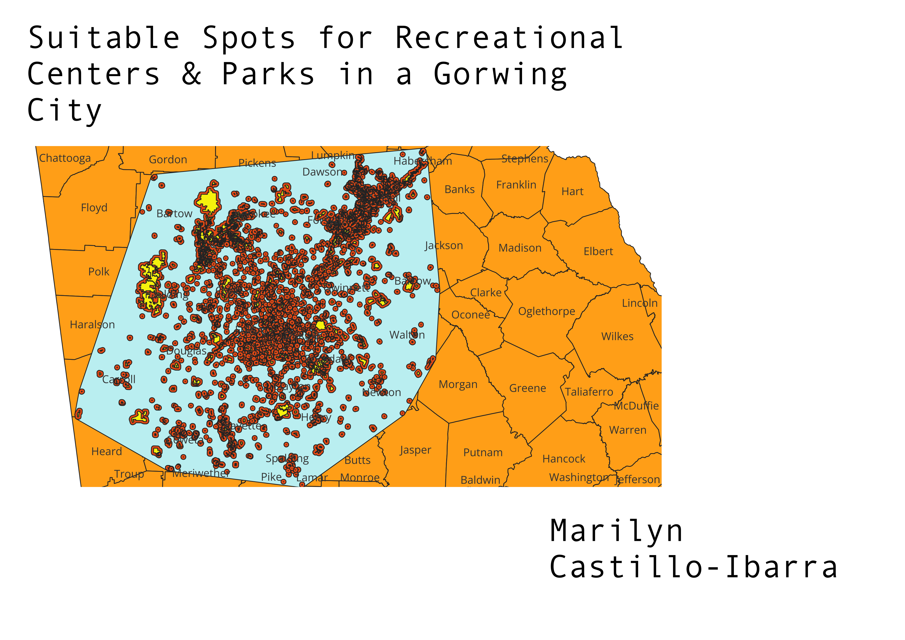

Homework 8
Map

The methods I used were buffer and covex hull. I used buffer to show the areas that already had parks and recreational centers in the city of Atlanta. Then I used to covex hull to only highlight the area of Atlanta to see if there was more room for parks and recreational centers
My question was could a city as big as Atlanta still manage to add parks and recreational centers.
Links to data